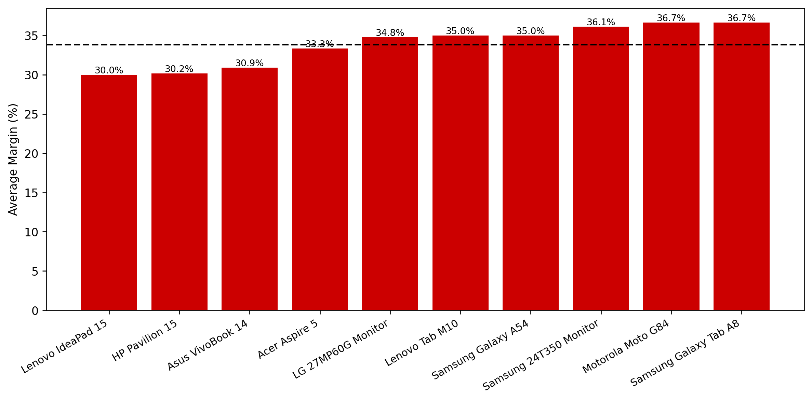
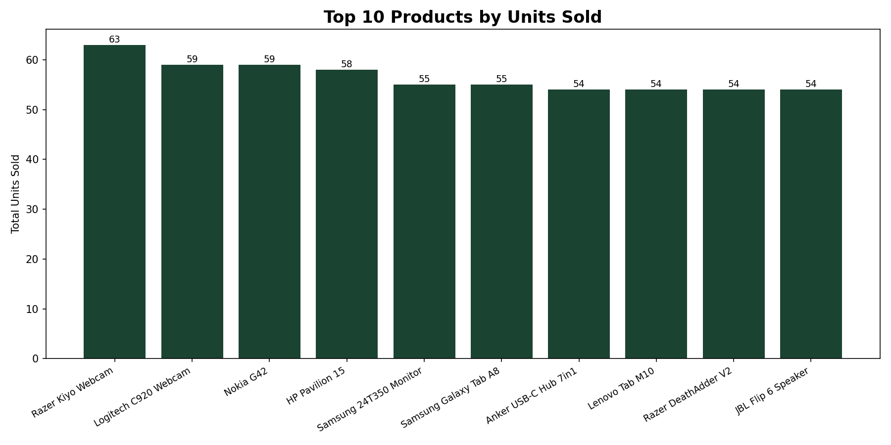
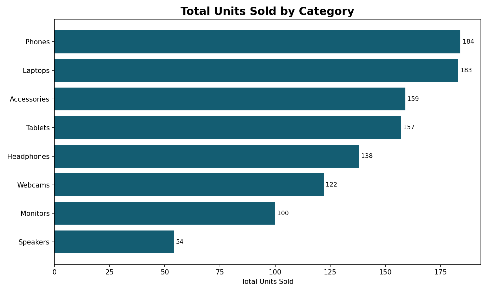

Project Overview
This project analyzes ecommerce marketplace data from three CSV sources: orders, products, and countries. The goal is to clean, combine, and evaluate sales data across multiple marketplaces and countries.
The analysis focuses on revenue, profit, order volume, return behavior, product performance, and country-level marketplace trends.
Key Metrics
Total Revenue
€261,449
Total Profit
€139,492
Total Orders
798
Average Margin
40.58%
Marketplace and Country Performance
This section compares marketplace and country-level performance using revenue, profit, order volume, and return-related indicators.
| Marketplace | Country | Revenue | Orders | Profit Margin |
|---|---|---|---|---|
| Amazon | Germany | €58,200 | 1,240 | 21% |
| Allegro | Poland | €41,500 | 1,520 | 16% |
| Kaufland | Czech Republic | €25,150 | 660 | 14% |
Revenue by Marketplace

Orders by Marketplace

Revenue by Country

Profit by Country

Sales Trends
This section shows how revenue and order volume changed over time.
Monthly Revenue Trend

Monthly Orders Trend

Product Performance
This section highlights the strongest and weakest product-level results based on revenue, units sold, profit margin, and return behavior.
Top Products by Revenue

Low Margin Products

Top Products by Return Rate

Top Products by Units Sold

Category Analysis
Category-level analysis focused on revenue contribution, profitability, and sales distribution across product groups.
Revenue by Category

Average Margin by Category

Revenue by Category per Country

Total Units Sold by Category

Operational Insights
- Amazon generated the highest share of marketplace revenue.
- Poland and Germany were the strongest countries by total revenue.
- Germany generated the highest total profit.
- October and June showed the strongest monthly revenue performance.
- Hungary and Austria had the highest return rates among countries.
Technologies Used
- Python for data processing and analysis
- Pandas for working with transactional ecommerce data
- Matplotlib for business data visualizations
- HTML and CSS for building the dashboard presentation layer
- Git and GitHub for version control and project documentation
Project Summary
This project demonstrates how marketplace sales data can be transformed into business insights using Python analytics workflows and dashboard visualization techniques.
The dashboard combines operational reporting, sales trend analysis, profitability monitoring, and marketplace performance evaluation across multiple ecommerce platforms.
Possible Future Improvements
- Interactive charts and filtering tools
- SQL database integration
- Automated ETL workflows
- Real-time marketplace reporting